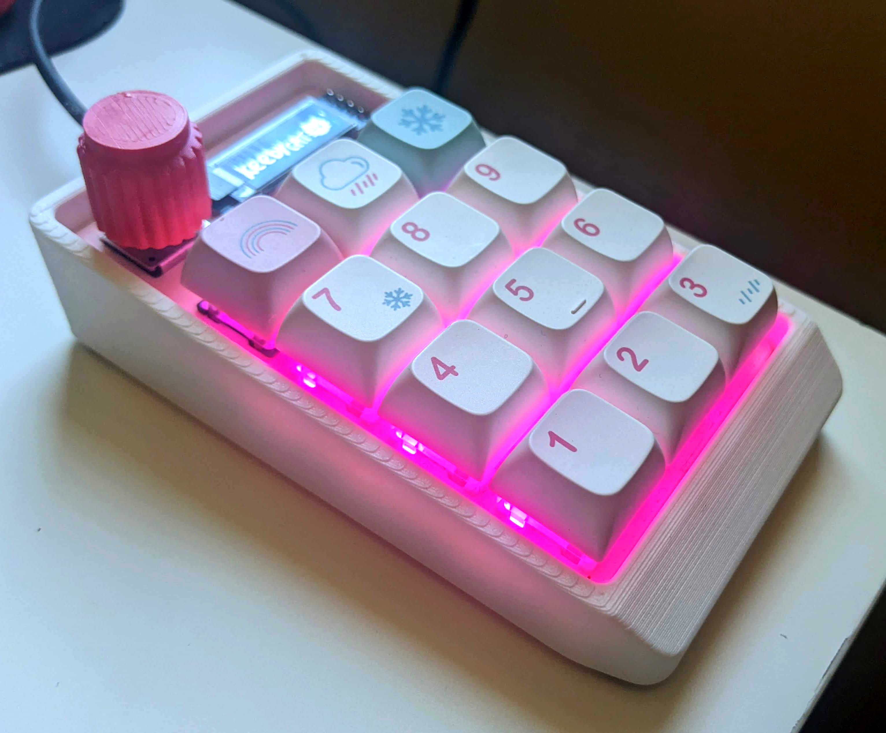
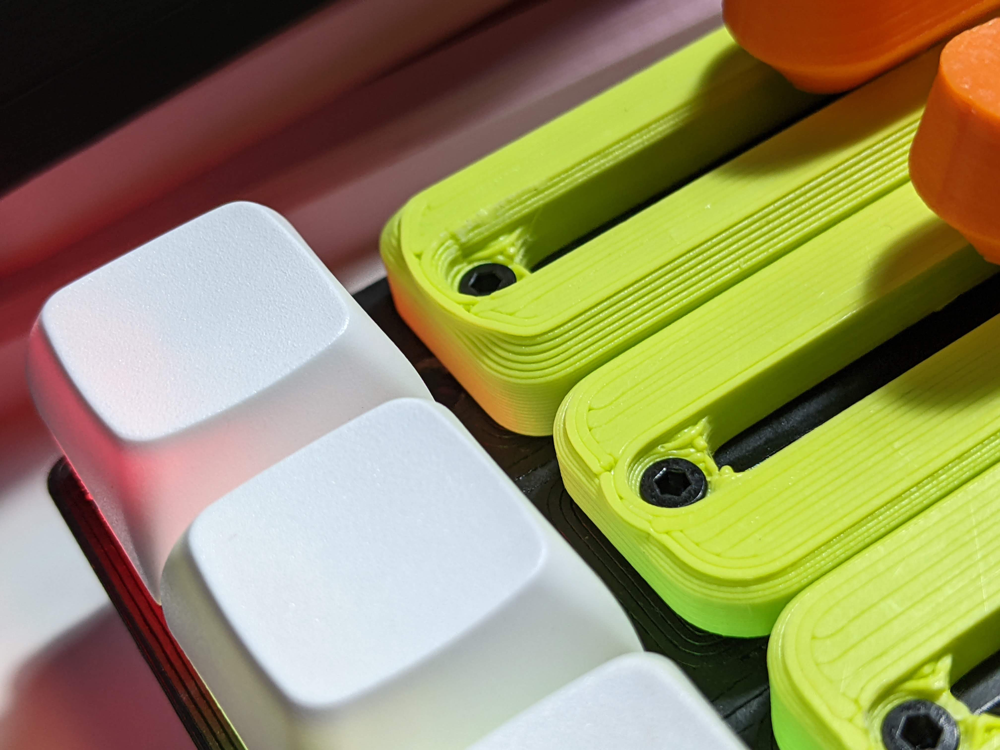
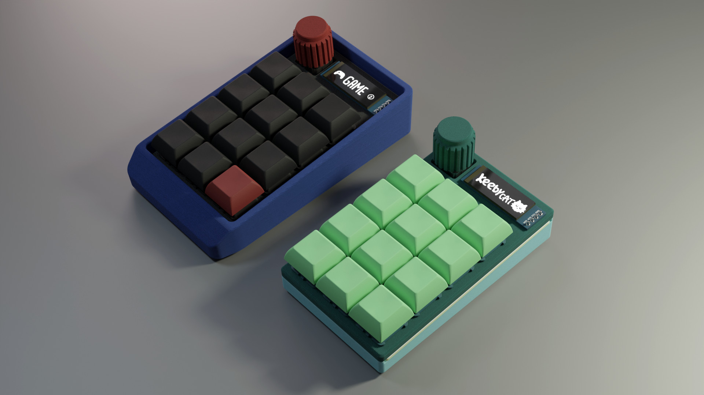

Keeby Cat is a highly configurable macropad with multiple fader and knob layouts. A single PCB (printed circuit board) can support knobs, faders and buttons in a variety of configurations!
Each key has an individually addressable LED for status indication. Additionally, an optional screen can be used to show information about the current "layer".
Developement is still in progress, but all prototypes thus far have been functional. More information and source files are available on Github